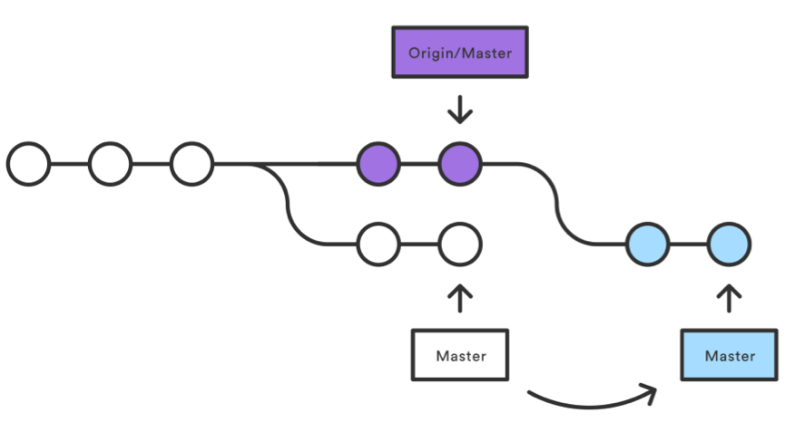
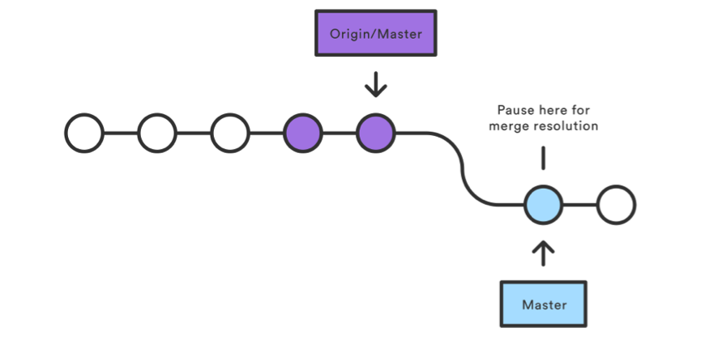
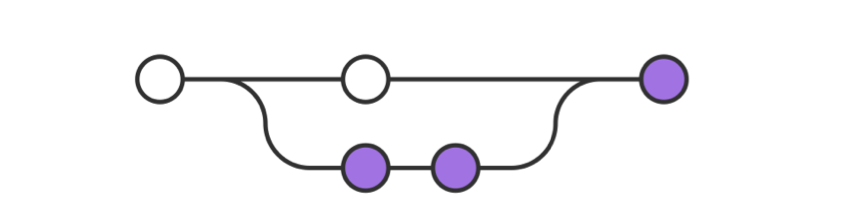
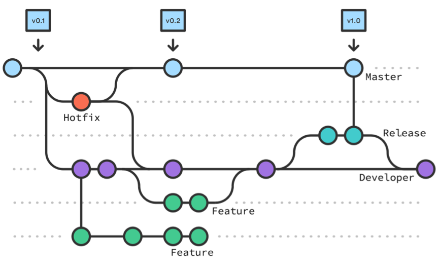
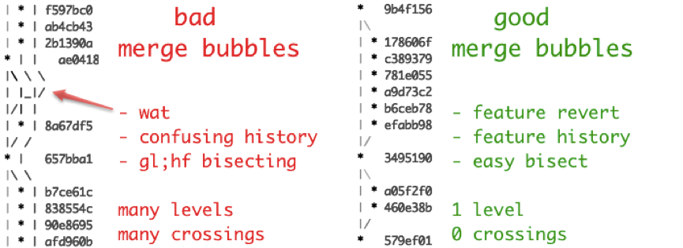
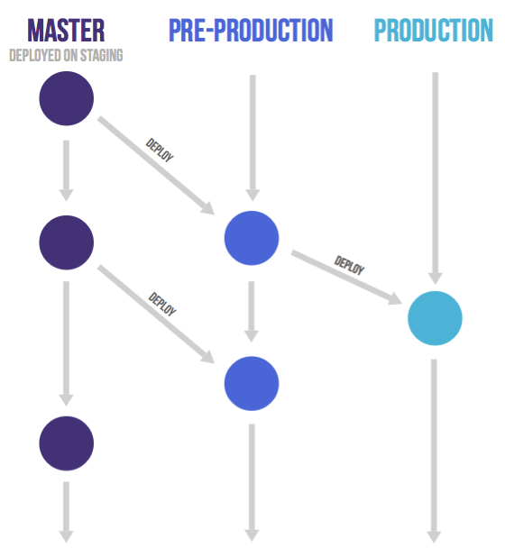
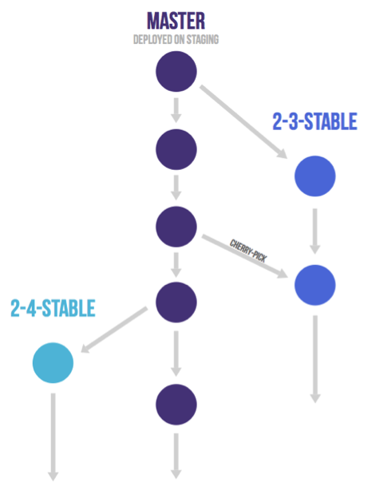

工作流
中心协同工作流
首先，我们先说明一下，Git 是可以像 SVN 这样的中心工作流一样工作的。我相信很多程序员都是在采用这样的工作方式。
这个过程一般是下面这个样子的。
-
从服务器上做
git pull origin main把代码同步下来。 -
改完后，
git commit到本地仓库中。 -
然后
git push origin main到远程仓库中，这样其他同学就可以得到你的代码了。
如果在第 3 步发现 push 失败，因为别人已经提交了，那么你需要先把服务器上的代码给 pull 下来，为了避免有 merge 动作，你可以使用 git pull --rebase 。这样就可以把服务器上的提交直接合并到你的代码中，对此，Git 的操作是这样的。
-
先把你本地提交的代码放到一边。
-
然后把服务器上的改动下载下来。
-
然后在本地把你之前的改动再重新一个一个地做 commit，直到全部成功。
如下图所示。Git 会把 Origin/Main 的远程分支下载下来（紫色的），然后把本地的 Main 分支上的改动一个一个地提交上去（蓝色的）。

如果有冲突，那么你要先解决冲突，然后做 git rebase --continue。如下图所示，git 在做 pull --rebase 时，会一个一个地应用（apply）本地提交的代码，如果有冲突就会停下来，等你解决冲突。

功能分支协同工作流
上面的中心协同工作流有一个问题，就是大家都在一个主干上开发程序，对于小团队或是小项目你可以这么干，但是对比较大的项目或是人比较多的团队，这么干就会有很多问题。
最大的问题就是代码可能干扰太严重。尤其是，我们想安安静静地开发一个功能时，我们想把各个功能的代码变动隔离开来，同时各个功能又会有多个开发人员在开发。
这时，我们不想让各个功能的开发人员都在 Main 分支上共享他们的代码。我们想要的协同方式是这样的：同时开发一个功能的开发人员可以分享各自的代码，但是不会把代码分享给开发其他功能的开发人员，直到整个功能开发完毕后，才会分享给其他的开发人员（也就是进入主干分支）。
因此，我们引入“功能分支”。这个协同工作流的开发过程如下。
-
首先使用
git checkout -b new-feature创建new-feature分支。 -
然后共同开发这个功能的程序员就在这个分支上工作，进行 add、commit 等操作。
-
然后通过
git push -u origin new-feature把分支代码 push 到服务器上。 -
其他程序员可以通过git pull --rebase来拿到最新的这个分支的代码。
-
最后通过 Pull Request 的方式做完 Code Review 后合并到 Main 分支上。

就像上面这个图显示的一样，紫色的分支就是功能分支，合并后就会像上面这个样子。
我们可以看到，其实，这种开发也是以服务器为中心的开发，还不是 Git 分布式开发，它只不过是用分支来完成代码改动的隔离。
另外，我想提醒一下，为什么会叫“功能分支”，而不是“项目分支”？因为 Git 的最佳实践希望大家在开发的过程中，快速提交，快速合并，快速完成。这样可以少很多冲突的事，所以叫功能分支。
传统的项目分支开得太久，时间越长就越合不回去。这种玩法其实就是让我们把一个大项目切分成若干个小项目来执行（最好是一个小功能一个项目）。这样才是互联网式的快速迭代式的开发流程。
GitFlow 协同工作流
在真实的生产过程中，前面的协同工作流还是不能满足工作的要求。这主要因为我们的生产过程是比较复杂的，软件生产中会有各式各样的问题，并要面对不同的环境。我们要在不停地开发新代码的同时，维护线上的代码，于是，就有了下面这些需求。
希望有一个分支是非常干净的，上面是可以发布的代码，上面的改动永远都是可以发布到生产环境中的。这个分支上不能有中间开发过程中不可以上生产线的代码提交。
希望当代码达到可以上线的状态时，也就是在 alpha/beta release 时，在测试和交付的过程中，依然可以开发下一个版本的代码。
最后，对于已经发布的代码，也会有一些 Bug-fix 的改动，不会将正在开发的代码提交到生产线上去。
你看，面对这些需求，前面的那些协同方式就都不行了。因为我们不仅是要在整个团队中共享代码，我们要的更是管理好不同环境下的代码不互相干扰。说得技术一点儿就是，要管理好代码与环境的一致性。
为了解决这些问题，GitFlow 协同工作流就出来了。
GitFlow 协同工作流是由 Vincent Driessen 于 2010 年在 A successful Git branching model 这篇文章介绍给世人的。
这个协同工作流的核心思想如下图所示。

整个代码库中一共有五种分支。
-
Master (现在叫Main) 分支。也就是主干分支，用作发布环境，上面的每一次提交都是可以发布的。
-
Feature 分支。也就是功能分支，用于开发功能，其对应的是开发环境。
-
Developer 分支。是开发分支，一旦功能开发完成，就向 Developer 分支合并，合并完成后，删除功能分支。这个分支对应的是集成测试环境。
-
Release 分支。当 Developer 分支测试达到可以发布状态时，开出一个 Release 分支来，然后做发布前的准备工作。这个分支对应的是预发环境。之所以需要这个 Release 分支，是我们的开发可以继续向前，不会因为要发布而被 block 住而不能提交。
一旦 Release 分支上的代码达到可以上线的状态，那么需要把 Release 分支向 Master (Main) 分支和 Developer 分支同时合并，以保证代码的一致性。然后再把 Release 分支删除掉。
- Hotfix 分支。是用于处理生产线上代码的 Bug-fix，每个线上代码的 Bug-fix 都需要开一个 Hotfix 分支，完成后，向 Developer 分支和 Master (Main) 分支上合并。合并完成后，删除 Hotfix 分支。
这就是整个 GitFlow 协同工作流的工作过程。我们可以看到：
-
我们需要长期维护 Master 和 Developer 两个分支。
-
这其中的方式还是有一定复杂度的，尤其是 Release 和 Hotfix 分支需要同时向两个分支作合并。所以，如果没有一个好的工具来支撑的话，这会因为我们可能会忘了做一些操作而导致代码不一致。
-
GitFlow 协同虽然工作流比较重。但是它几乎可以应对所有公司的各种开发流程，包括瀑布模型，或是快速迭代模型。
GitHub/GitLab 协同工作流
GitFlow 的问题
对于 GitFlow 来说，虽然可以解决我们的问题，但是也有很多问题。在 GitFlow 流行了一段时间后，圈内出现了一些不同的声音。参看下面两篇吐槽文章。
其中有个问题就是因为分支太多，所以会出现 git log 混乱的局面。具体来说，主要是 git-flow 使用 git merge --no-ff 来合并分支，在 git-flow 这样多个分支的环境下会让你的分支管理的 log 变得很难看。如下所示，左边是使用–no-ff 参数在多个分支下的问题。

所谓--no-ff参数的意思是——no fast forward的意思。也就是说，合并的方法不要把这个分支的提交以前置合并的方式，而是留下一个 merge 的提交。这是把双刃剑，我们希望我们的--no-ff能像右边那样，而不是像左边那样。
对此的建议是：只有 feature 合并到 developer 分支时，使用–no-ff 参数，其他的合并都不使用--no-ff参数来做合并。
另外，还有一个问题就是，在开发得足够快的时候，你会觉得同时维护 Master 和 Developer 两个分支是一件很无聊的事，因为这两个分支在大多数情况下都是一样的。包括 Release 分支，你会觉得创建的这些分支太无聊。
而你的整个开发过程也会因为这么复杂的管理变得非常复杂。尤其当你想回滚某些人的提交时，你就会发现这事似乎有点儿不好干了。而且在工作过程中，你会来来回回地切换工作的分支，有时候一不小心没有切换，就提交到了不正确的分支上，你还要回滚和重新提交，等等。
GitLab 一开始是 GitFlow 的坚定支持者，后来因为这些吐槽，以及 Hacker News 和 Reddit 上大量的讨论，GitLab 也开始不玩了。他们写了一篇 blog来创造了一个新的 Workflow——GitLab Flow，这个 GitLab Flow 是基于 GitHub Flow 来做的（参看： GitHub Flow ）。
GitHub Flow
所谓 GitHub Flow，其实也叫 Forking flow，也就是 GitHub 上的那个开发方式。
-
每个开发人员都把“官方库”的代码 fork 到自己的代码仓库中。
-
然后，开发人员在自己的代码仓库中做开发，想干啥干啥。
-
因此，开发人员的代码库中，需要配两个远程仓库，一个是自己的库，一个是官方库（用户的库用于提交代码改动，官方库用于同步代码）。
-
然后在本地建“功能分支”，在这个分支上做代码开发。
-
这个功能分支被 push 到开发人员自己的代码仓库中。
-
然后，向“官方库”发起 pull request，并做 Code Review。
-
一旦通过，就向官方库进行合并。
这就是 GitHub 的工作流程。
如果你有“官方库”的权限，那么就可以直接在“官方库”中建功能分支开发，然后提交 pull request。通过 Code Review 后，合并进 Master 分支，而 Master 一旦有代码被合并就可以马上 release。
这是一种非常 Geek 的玩法。这需要一个自动化的 CI/CD 工具做辅助。是的，CI/CD 应该是开发中的标配了。
GitLab Flow
然而，GitHub Flow 这种玩法依然会有好多问题，因为其虽然变得很简单，但是没有把我们的代码和我们的运行环境给联系在一起。所以，GitLab 提出了几个优化点。
其中一个是引入环境分支，如下图所示，其包含了预发布（Pre-Production）和生产（Production）分支。

而有些时候，我们还会有不同版本的发布，所以，还需要有各种 release 的分支。如下图所示。Master 分支是一个 roadmap 分支，然后，一旦稳定了就建稳定版的分支，如 2.3.stable 分支和 2.4.stable 分支，其中可以 cherry-pick master 分支上的一些改动过去。

这样也就解决了两个问题：
-
环境和代码分支对应的问题；
-
版本和代码分支对应的问题。
老实说，对于互联网公司来说，环境和代码分支对应这个事，只要有个比较好的 CI/CD 生产线，这种环境分支应该也是没有必要的。而对于版本和代码分支的问题，我觉得这应该是有意义的，但是，最好不要维护太多的版本，版本应该是短暂的，等新的版本发布时，老的版本就应该删除掉了。
协同工作流的本质
对于上面这些各式各样的工作流的比较和思考，虽然，我个人非常喜欢 GitHub Flow，在必要的时候使用上 GitLab 中的版本或环境分支。不过，我们现实生活中，还是有一些开发工作不是以功能为主，而是以项目为主的。也就是说，项目的改动量可能比较大，时间和周期可能也比较长。
我在想，是否有一种工作流，可以面对我们现实工作中的各种情况。但是，我想这个世界太复杂了，应该不存在一种一招鲜吃遍天的放之四海皆准的银弹方案。所以，我们还要根据自己的实际情况来挑选适合我们的协同工作的方式。
而代码的协同工作流属于 SCM（Software Configuration Management）的范畴，要挑选好适合自己的方式，我们需要知道软件工程配置管理的本质。
根据这么多年来我在各个公司的经历，有互联网的，有金融的，有项目的，有快速迭代的等，我认为团队协同工作的本质不外乎这么几个事儿。
-
不同的团队能够尽可能地并行开发。
-
不同软件版本和代码的一致性。
-
不同环境和代码的一致性。
-
代码总是会在稳定和不稳定间交替。我们希望生产线上的代码总是能对应到稳定的代码上来。
基本上述的四个事儿，上述的工作流大都是在以建立不同的分支，来做到开发并行、代码和环境版本一致，以及稳定的代码。
要选择适合自己的协同工作流，我们就不得不谈一下软件开发的工作模式。
首先，我们知道软件开发的趋势一定是下面这个样子的。
-
以微服务或是 SOA 为架构的方式。一个大型软件会被拆分成若干个服务，那么，我们的代码应该也会跟着服务拆解成若干个代码仓库。这样一来，我们的每个代码仓库都会变小，于是我们的协同工作流程就会变简单。
对于每个服务的代码仓库，我们的开发和迭代速度也会变得很快，开发团队也会跟服务一样被拆分成多个小团队。这样一来， GitFlow 这种协同工作流程就非常重了，而 GitHub 这种方式或是功能分支这种方式会更适合我们的开发。
-
以 DevOps 为主的开发流程。DevOps 关注于 CI/CD，需要我们有自动化的集成测试和持续部署的工具。这样一来，我们的代码发布速度就会大大加快，每一次提交都能很快地被完整地集成测试，并很快地发布到生产线上。
于是，我们就可以使用更简单的协同工作流程，不需要维护多个版本，也不需要关注不同的运行环境，只需要一套代码，就可以了。GitHub Flow 或是功能分支这种方式也更适应这种开发。
你看，如果我们将软件开发升级并简化到 SOA 服务化以及 DevOps 上来，那么协同工作流就会变得非常简单。所以，协同工作流的本质，并不是怎么玩好代码仓库的分支策略，而是玩好我们的软件架构和软件开发流程。
当然，服务化和 DevOps 是每个开发团队需要去努力的目标，但就算是这样，也有某些情况我们需要用重的协同工作的模式。比如，整个公司在做一个大的升级项目，这其中会对代码做一个大的调整（很有可能是一次重大的重构）。
这个时候，可能还有一些并行的开发需要做，如一些小功能的优化，一些线上 Bug 的处理，我们可能还需要在生产线上做新旧两个版本的 A/B 测试。在这样的情况下，我们可能会或多或少地使用 GitFlow 协同工作流。
但是，这样的方式不会是常态，是特殊时期，我们不可能隔三差五地对系统做架构或是对代码做大规模的重构。所以，在大多数情况下，我们还是应该选择一个比较轻量的协同工作流，而在特殊时期特例特办。
最后，让我用一句话来结束这篇文章——与其花时间在 Git 协同工作流上，还不如把时间花在调整软件架构和自动化软件生产和运维流程上来，这才是真正简化协同工作流程的根本。